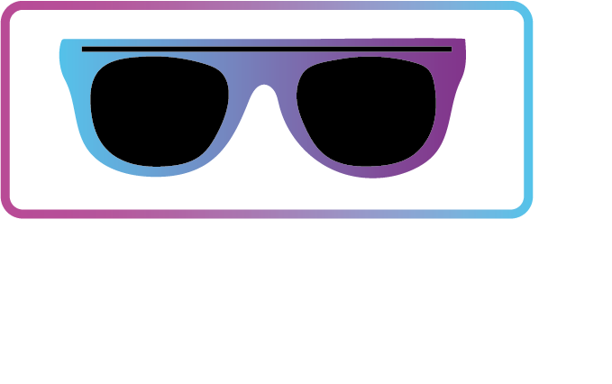

خدمات طراحی سایت
با ما بهترین باش
لورم ایپسوم متن ساختگی با تولید سادگی نامفهوم از صنعت چاپ، و با استفاده از طراحان گرافیک است، چاپگرها و متون بلکه روزنامه و مجله در
لورم ایپسوم متن ساختگی با تولید سادگی نامفهوم از صنعت چاپ، و با استفاده از طراحان گرافیک است، چاپگرها و متون بلکه روزنامه و مجله در

توضیحاتی که لازم داریم
توضیحاتی که لازم داریم
توضیحاتی که لازم داریم
توضیحاتی که لازم داریم
توضیحاتی که لازم داریم
توضیحاتی که لازم داریم
*لورم ساز! لورم ایپسوم متن ساختگی با تولید سادگی نامفهوم از صنعت چاپ، و با استفاده از طراحان گرافیک است، چاپگرها و متون بلکه روزنامه و مجله در ستون و سطرآنچنان که لازم است، و برای شرایط فعلی تکنولوژی مورد نیاز، و کاربردهای متنوع با هدف بهبود ابزارهای کاربردی می باشد، کتابهای زیادی در شصت و سه درصد گذشته

طراحان گرافیک است، چاپگرها و متون بلکه روزنامه و مجله در ستون و سطرآنچنان که لازم است، و برای شرایط
با این اوتلاین تعداد زیادی دیتا دریافت میکنید که میتونید اونارو سفارشی سازی کنید
توسعه ساده
رنگ های زیاد
درگ اند دراپ